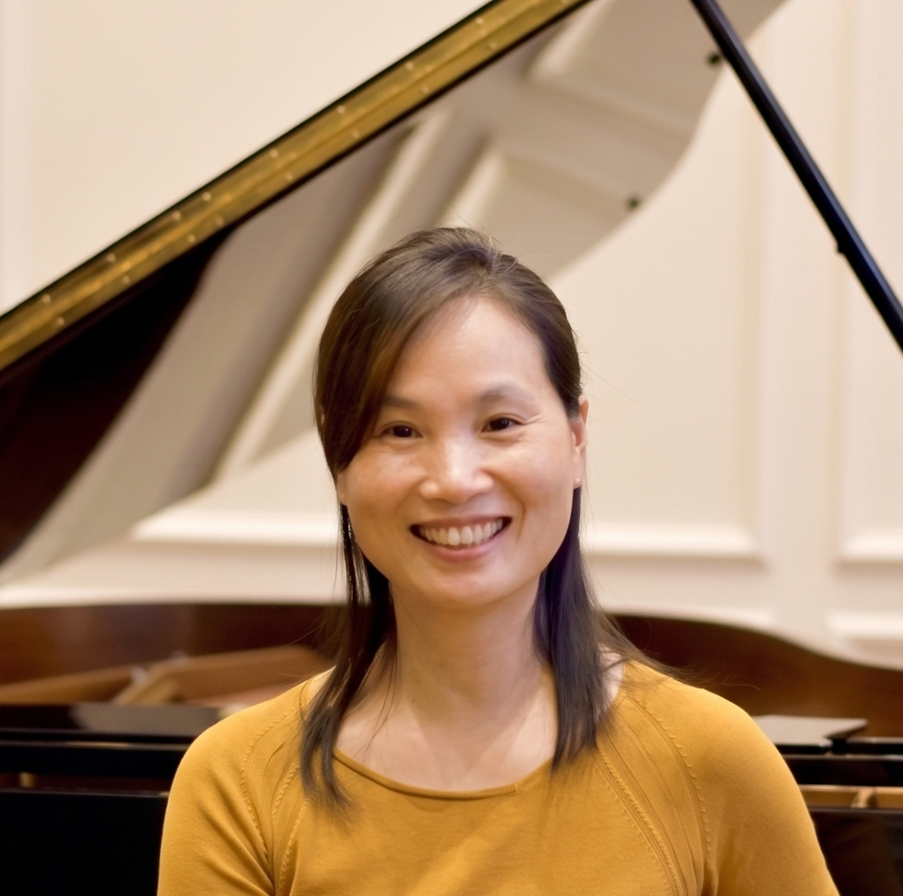

Professional classical piano training located in Richmond Hill.

With over 31 years of teaching experience beginning in 1995, Ping Shen is a highly accomplished piano instructor dedicated to fostering a lifelong love of music in her students. Known for her friendly, patient, and passionate approach, Teacher Shen specializes in making piano lessons engaging and interactive for all ages. She has extensive experience teaching younger learners and absolute beginners, ensuring they build a joyful and solid foundation, while also possessing the high-level expertise required to train advanced students for RCM examinations (up to ARCT) and competitive performances.
Teacher Shen believes that understanding the "why" behind the music is just as important as the "how." Her years of experience and deep academic background allow her to break down complex concepts into easily understandable lessons. She places a strong emphasis on mastering classical articulation and technique.
Teacher Shen holds a Master's Degree in Music from Capital Normal University and a Bachelor's Degree in Music Education from South China Normal University, alongside an RCM ARCT Certificate and the RCM Teacher Certification Program, as a specialist in teaching elementary, intermediate, and advanced piano. Furthermore, her deep understanding of piano pedagogy is reflected in her academic publications and performance accolades: